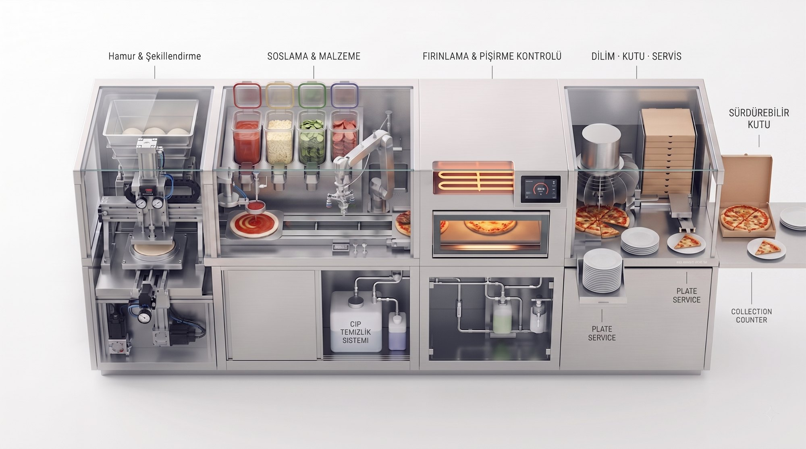
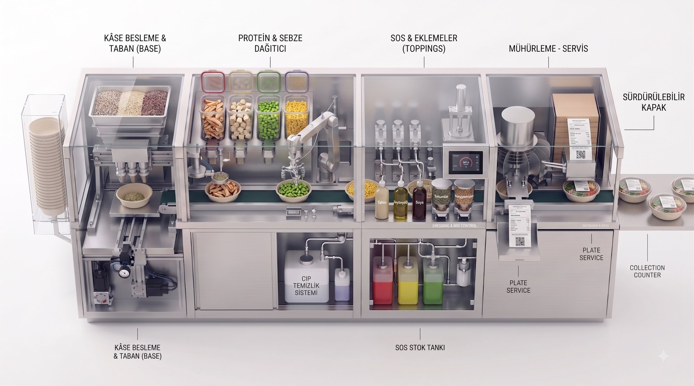

Mutfağın geleceği. Yapay zeka, robotik ve premium tasarımla yeniden tasarlandı.
KeşfetÖztiryakiler ve İnoksan'ın ürettiği ekipmanları; yapay zeka, robotik ve premium tasarımla yeniden tasarlıyoruz. İnsansı robot değil, otomat değil — mutfağın kalbine gömülen gerçek bir endüstriyel çözüm.
Vasıflı aşçı bulmak zor ve pahalı. Soğukçu, pide ustası, paketçi — her istasyon ayrı maaş, ayrı vardiya, sürekli devir.
Aynı yemek her elde farklı çıkıyor. Porsiyon dengesizliği müşteri memnuniyetini ve marka tutarlılığını bozuyor.
Göz kararı porsiyonlama ve yanlış pişirme doğrudan kâr marjını yiyor. Gıda fiyatları arttıkça her gram önemli.
Robot garsonlar şov; akıllı fırınlar yalnızca ekran. Hiçbiri fiziksel üretimi gerçekten devralmıyor.
Somut örnek: bir pizza restoranı. Bir pizzayı geleneksel mutfakta çıkarmak — hazırlıktan temizliğe kadar — birkaç kişinin elinden geçen uzun bir süreç. AUTOKITCH bu zinciri tek hatta toplar.
Bugün bu maaşlara yılda ≈₺3,3 milyon ödüyorsunuz. Modül fiyatı netleştiğinde geri ödeme süresini bu bütçe üzerinden hesaplayacağız — modül kendini, zaten harcadığınız maaş bütçesinden öder.
Üstelik mesele sadece para değil:
İlk ürünümüz komple bir otonom pizza hattı. Her modül mutfaktaki bir çalışanın işini devralır; mevcut paslanmaz çelik tezgaha tam oturur, POS ile konuşur ve siparişi insan eli değmeden hazırlar.


Sanayi tipi mutfakta pizza tabanını açan gerçek bir robotik hat (Wangong Machinery). Modül 01'in yaptığı iş, bugün sahada çalışan kanıtlanmış bir teknoloji.
Pizza; ölçülü hamur, ölçülü sos, ölçülü malzeme ve sabit fırın süresi demek — yani robotun en iyi yaptığı iş. Hattın her adımının sahada çalışan örneği zaten var; biz bunları tek modüler hatta topluyoruz.
Konsept videoları yapay zeka ile üretilmiştir; "Sahadan" videosu üçüncü tarafa aittir (Wangong Machinery) ve kategorinin bugün çalıştığını gösterir.
Sanayi mutfağındaki her ekipman grubu, aynı mantıkla otonom bir modüle dönüşebilir. Yarın salata da isterseniz salata modülünü getirir, aynı sisteme bağlarız — reçete, stok ve üretim tek ekrandan yönetilir.
Ocak, devrilir tava, kazan — otonom pişirme ve karıştırma.
Pizza, pide, börek hatları — ilk ürünümüz bu gruptan.
Otonom ızgara/kızartma, pişme kontrolü, yağ yönetimi.
Silodan gramajlı porsiyon, sos, servise hazır uzatma.
Yıkama, doğrama, kıyma — mutfağın görünmeyen ağır işi.
Kendi kendini temizleyen ekipman, kapanış mesaisi yok.
Hedefimiz: mutfak gruplarını tek tek otonomlaştırıp tek beyinden yönetmek — ihtiyacınız büyüdükçe modül eklersiniz, sistem büyür.
Modüller eldir; yapay zeka beyindir. Tüm modülleri tek bir bulut tabanlı mutfak işletim sistemi yönetir — reçeteyi dijitalleştirir, üretimi planlar, fireyi ve maliyeti veriyle optimize eder.
Her porsiyon, her şube, her vardiya birebir aynı. Reçeteyi ekrandan güncelle; tüm modüller saniyesinde uygular.
Saate, güne ve geçmiş satışa bakarak ne kadar üretileceğini öngörür; stok ve siparişi optimize eder, fireyi düşürür.
Sipariş yoğunluğuna göre üretim sırasını ve hızını yönetir; yoğun saatte darboğazı önler.
Telefondan tüm şubeleri izle, anlık uyarı al. Sistem topladığı veriyle sürekli iyileşir — zamanla derinleşen avantaj.
Sahada kanıt: bir ABD pizza operatörü, AI ile (hava · trafik · saat · sosyal veri) satışı önceden tahmin edip üretimi ve tedariki optimize ediyor; tek çalışan 120 pizzaya kadar üretebiliyor. Bizim "mutfak beyni" tam bu mantıkta çalışır.
Otomatik mutfak modülü yapmak tek başına yetmez; üç şeyin aynı anda olması gerekir — ve üçü de bizde birleşiyor.
Kurucu mimar/endüstriyel tasarımcı. Diğer mutfak ürünlerinden ayrışan, kolay kopyalanamayan bir tasarım dili ve CMF; ergonomi ve sağlamlık üzerine profesyonel bir çalışma. Modül tezgaha "sonradan eklenmiş" değil, ait gibi durur.
Bu tarz üretim Türkiye'de yapılabilir ve öngörülebilir — güçlü sanayi mutfağı ekosistemi (Öztiryakiler / İnoksan tedarik zinciri) hazır. Biz bu üretime katma değer katıyoruz: uygun maliyet + yerinde servis.
Yazılım geliştirmek eskiden çok pahalıydı; gelişen yapay zekâ araçlarıyla bu sistemleri artık çok daha düşük maliyetle geliştiriyoruz. Reçeteyi dijitalleştiren, fireyi ve standardı veriyle optimize eden mutfak beyni — zamanla derinleşen avantaj.
CES 2026 "Mutfağın Geleceği" panelinin (The Spoon) ortak sonucu: kazanan, gösterişli insansı robotlar değil — arka planda "görünmez" AI ile çalışan modüler, göreve-özel otomasyon. Tam olarak bizim yaptığımız.
"Teknoloji görünmez olmalı. Bir özellik 'yapabiliyoruz' diye değil, gerçek bir ihtiyacı çözdüğü için var olmalı."
"AI tek bir 'her şeyi bilen model' değil; adımlara gömülü entegrasyonlardır. Mutfak doğası gereği risklidir; tasarım buna göre olmalı."
"İnsansı ev mutfak robotu en az 5 yıl uzakta; çoğu 'akıllı' özellik gerçek bir ihtiyaca hizmet etmiyordu."
CES 2026 · The Spoon — "The Kitchen of the Future: AI, Robotics & Smart Tech" paneli (7 Ocak 2026).
İnsansı (humanoid) robotlar geliyor — ama sanayi mutfağının onlara ihtiyacı yok. Kısıtlı bir alanda, çok hızlı ve durmaksızın üretim gerekir; eli kolu olan genel amaçlı bir robot değil, mutfağın biçimine ve formuna göre tasarlanmış, göreve özel robot kazanır. Biz tam bunu üretiyoruz.
Otonom salata hattı yapan teknoloji, 2025'te 186,4 milyon dolara satıldı. Yani: bu tür mutfak modülleri o kadar değerli ki dev şirketler satın alıyor.
Yemek porsiyonlayan robot şirketi; robotları aylık kirayla veriyor (sürekli gelir) ve 100 milyon porsiyonu geçti. Yani: model sahada çalışıyor ve para kazandırıyor.
Her tabaktan sonra kendini temizleyen robotik mutfak; %75'e varan işçilik ve %33 gıda israfı tasarrufu beyan ediyor. Yani: bizim vaat ettiğimiz tasarruf, sektörde ölçülmüş durumda.
"Kitchens of Tomorrow" ekosistem araştırması (Mart 2026): 4 kıtada 60'tan fazla robotik mutfak şirketi; son 7 ayda haritaya 20 yeni şirket eklendi. Yani: kategori hızla büyüyor — artık bilim kurgu değil.
Güncel örnek (Circus CA-1): yapay zekâ destekli robotik mutfak, insan yardımı olmadan saatte 120 öğün üretiyor. Yani: bizim modüllerle hedeflediğimiz üretim hızı, kanıtlanmış durumda.
Kaynaklar: The Spoon, QSR Magazine, The Robot Report, Restaurant Dive, Bloomberg / NRN, Kitchens of Tomorrow — Global Robotic Kitchen Map (2025–2026).
Dünyada profesyonel mutfak ekipmanlarına bugün yılda ~41 milyar dolar harcanıyor. Bu pazarın robotik/otonom kısmı bugün ~3,5 milyar dolar — ve 2033'e kadar ~3 katına (~9,8 milyar dolara) çıkması bekleniyor. Yani klasik ekipman, adım adım robotik ekipmana dönüşüyor. Biz bu dönüşümün üreticisi olmak için kuruluyoruz.
Talebi iten şey basit: personel bulmak her yıl daha zor ve daha pahalı. Önce sanayi mutfakları robotlaşıyor; ev mutfakları arkadan geliyor.
Türkiye: ~330.000 restoran & kafe var (TÜİK). İlk hedefimiz yüksek hacimli zincirler — ve bu pazarda henüz yerli bir otonom mutfak üreticisi yok.
Kaynak: Precedence / Grand View / Roots Analysis (2025), TÜİK. Rakamlar yaklaşıktır.
Önce mutfağınızı projelendiririz (ihtiyaca göre modül seçimi ve yerleşim), sonra modülleri anahtar teslim kurarız. Showroom / VIP projelere premium CMF'li özel çözüm de bu kalemde.
Reçete, Vision AI, uzaktan izleme & güncellemeler — aylık veya yıllık abonelik.
Periyodik bakım ve teknik destek — aylık veya yıllık abonelik.
Modüle özel sarf malzemesi ve yedek parça satışı — opsiyonel ek gelir kalemi.